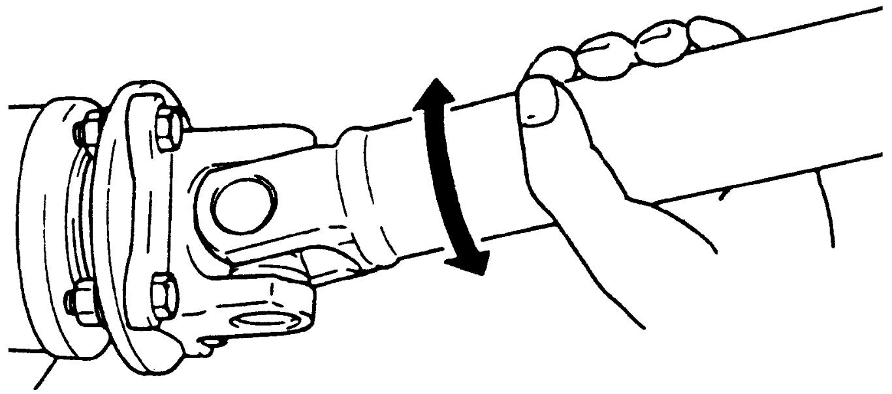

3D
| Propeller Shaft On-Vehicle Inspection |
Propeller Shaft Joint
If universal joint and/or ball joint are suspected of producing noise, check them for wear or damage. If any abnormalities are found, replace propeller shaft assembly with a new one.
NOTE:
Noise coming from universal joint(s) of propeller shaft can be distinguished from other noises because rhythm of chattering or rattling is in step with cruising speed. Noise is pronounced particularly on standing start or in coasting condition (when braking effect of engine is showing in the drive line).

 "Expand image")
Propeller Shaft Center Bearing
While the vehicle is hoisted, check propeller shaft bearings by rotating propeller shaft to identify where the noise is coming from. If any abnormalities are found, replace propeller shaft assembly with a new one.